스튜디오
배경·조명·소품을 배치하고, 촬영할 카메라와 장면을 저장합니다. 화면의 색감과 렌즈 효과는 효과에서 따로 설명합니다.
장면
아바타 배치
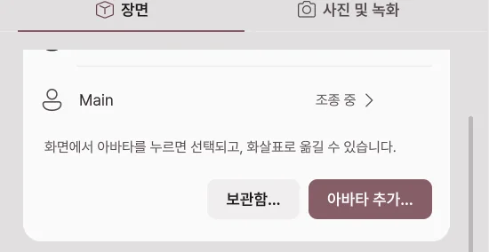
| 조절 | 바뀌는 것 |
|---|---|
| 위치 X | 좌우로 옮깁니다. |
| 위치 Y | 위아래로 옮깁니다. |
| 위치 Z | 앞뒤로 옮깁니다. |
| 회전 | 아바타가 바라보는 방향을 바꿉니다. |
| 크기 | 장면 속 아바타를 크게 또는 작게 만듭니다. |
| 밝기 | 아바타에 적용되는 밝기를 조절합니다. |
| 가운데로 | 아바타를 기준 위치로 돌려놓습니다. |
여러 아바타 (Pro)
아바타 추가로 같은 장면에 캐릭터를 더 놓습니다. 아바타를 선택한 뒤 조종 대상을 바꾸면 내 추적 입력을 받을 캐릭터가 바뀝니다.
- 같은 동작: 여러 아바타가 같은 추적 입력으로 함께 움직입니다.
- 립싱크 모두: 여러 아바타의 입을 함께 움직입니다.
- 립싱크 메인: 주 조종 아바타만 입을 움직입니다.
- 립싱크 끔: 공유 립싱크를 사용하지 않습니다.
포징 (Pro)
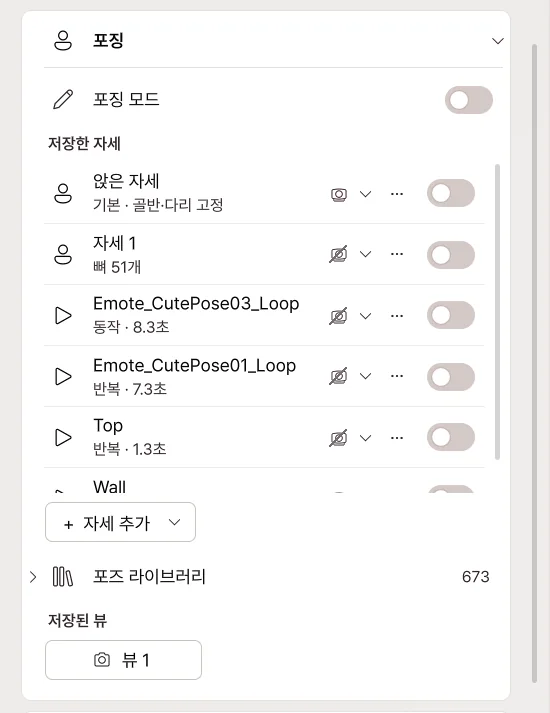
- 스튜디오 → 포징에서 포징 모드를 켭니다.
- 뼈를 선택해 회전 링을 끌거나 손·발을 옮깁니다.
- 완료를 눌러 자세를 저장합니다.
- 아바타 메뉴의 자세 카드에서 적용합니다.
| 조작·버튼 | 결과 |
|---|---|
| 뼈 선택·회전 | 선택한 관절의 방향을 바꿉니다. |
| 손·발 드래그 | 팔이나 다리가 따라오도록 끝점을 옮깁니다. |
| Alt+드래그 | 팔꿈치·무릎이 향하는 쪽을 바꿉니다. |
| 대칭 편집 | 반대쪽도 함께 바꿉니다. |
| 좌우 뒤집기 | 자세의 좌우를 바꿉니다. |
| 고정 | 선택한 뼈를 추적과 애니메이션이 움직이지 못하게 합니다. |
| 바닥에 붙이기 | 발을 바닥에 맞춥니다. |
| 완료 | 만든 자세를 저장합니다. |
| 버리기 | 편집한 자세를 적용하지 않고 나갑니다. |
포즈 라이브러리 (Pro)
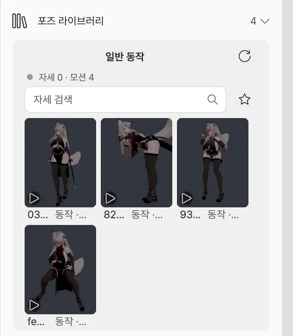
- 스튜디오 → 포징 → 포즈 라이브러리를 엽니다.
.anim파일이 있는 폴더를 선택합니다.- 자세 썸네일을 고르고 적용합니다.
- 해제를 누르면 돌아옵니다.
검색·즐겨찾기로 자주 쓰는 포즈를 찾고, 편집으로 포징 모드에서 고쳐 저장할 수 있습니다.
오브젝트 (Pro)
텍스트·이미지·도형과 .vprop 3D 모델을 사용할 수 있습니다.
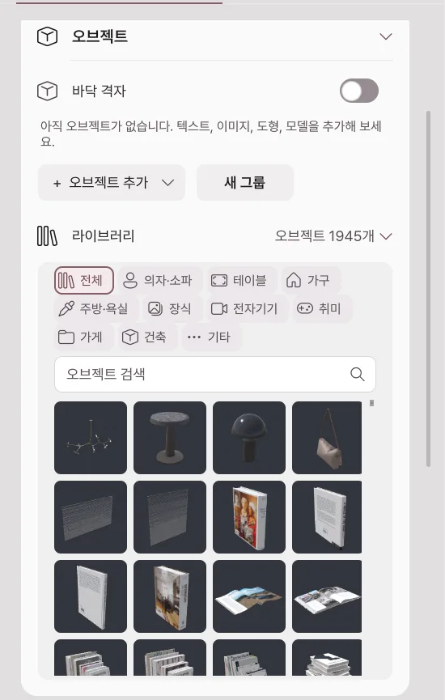
- 오브젝트 추가: 텍스트·이미지·도형·3D 소품을 놓습니다.
- 월드 고정: 아바타가 움직여도 물체는 제자리에 남습니다.
- 아바타·뼈에 붙이기: 몸이나 손·머리를 따라 움직입니다.
- 오프셋: 붙인 지점에서 조금 옮기거나 돌립니다. 손에 쥔 물건의 위치를 맞출 때 씁니다.
- 아바타 소속: 다른 장면으로 옮겨도 해당 아바타를 따라갑니다.
- 스튜디오 소속: 현재 장면에 남습니다.
소품과 아바타의 이용 권한은 각각 원제작자의 약관을 따릅니다. 자세한 내용은 아바타와 소품을 확인하세요.
방
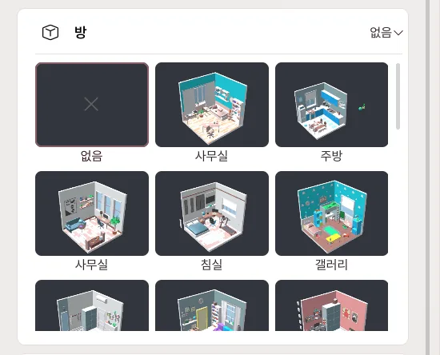
방 프리셋을 골라 배경 공간을 놓습니다. 위치·회전·크기로 무대와 아바타의 자리를 맞춥니다. BOOTH에서 산 추가 방은 DLC 방 팩을 보세요.
DLC 방 팩
2.2.0부터 있는 기능입니다. 2.1.2 이하에는 없습니다.
BOOTH에서 추가 콘텐츠(DLC)를 사면 스튜디오의 방 목록에 방이 늘어납니다. 이번 팩에는 일본 골목(낮·밤), 일본 아파트, 학교 수영장, 쇼룸 갤러리, 교실(교실 01·02의 낮·저녁·밤, Ver02), 코워킹 오피스가 들어 있습니다.
| 에디션 | DLC 방 | 기본 내장 방·방 조각 편집 |
|---|---|---|
| Basic + DLC | 사용 가능 | 사용 불가 |
| Pro + DLC | 사용 가능 | 사용 가능 |
DLC를 사기 전에는 DLC 방이 방 목록에 보이지 않습니다.
사고 앱에 등록하기
- BOOTH에서 DLC 상품을 삽니다. 라이선스와는 다른 상품이라 따로 주문합니다.
- 앱에서 설정 → 라이선스를 엽니다.
- 다른 코드 입력을 누르고 BOOTH 주문번호를 넣습니다. 라이선스 코드를 넣던 칸과 같은 곳입니다.
- 방이 열렸다는 안내가 나오면 끝입니다. 지금 라이선스는 그대로입니다.
DLC 주문은 라이선스를 바꾸지 않고, 이 PC에 방 팩을 받을 권리만 더합니다. 한 구매는 한 PC에서 쓰며, 다른 PC로 옮기기는 한 번 할 수 있습니다. 주문번호는 다른 사람에게 보여 주지 마세요.
방 받기
- 스튜디오 → 방을 엽니다.
- 아직 받지 않은 방 카드에는 받기 · 크기가 표시됩니다. 카드를 누르면 받기가 시작됩니다.
- 진행 막대가 끝나면 그 방이 장면에 열립니다.
받는 중에 ×를 누르면 멈추고, 다시 누르면 이어받습니다. 받은 방은 내장 방과 똑같이 씁니다.
| 받은 방 카드에서 | 하는 일 |
|---|---|
| 오른쪽 클릭 → 지우기 | PC에서 방 파일을 지웁니다. 권리는 남아 언제든 다시 받을 수 있습니다. |
| 업데이트 표시 | 새 버전이 나왔습니다. 오른쪽 클릭 → 업데이트로 받습니다. |
방을 고르면 바뀌는 것
DLC 방은 원래 장면의 조명과 분위기를 함께 가지고 있습니다.
- 방을 고르면 스튜디오의 주변광·반사 세기·안개가 그 방의 값으로 한 번 바뀝니다. 그 뒤로는 내 장면 설정으로 자유롭게 바꿀 수 있고, 방을 바꿔도 되돌리지 않습니다.
- 방의 불빛은 방 설정에 들어 있습니다. 불빛 스위치로 한꺼번에 켜고 끄고, 밝기로 전체 밝기를 0~3배로 맞춥니다. 구역별 불빛으로 거실 조명처럼 일부만 켤 수도 있습니다.
- 방의 불빛은 방을 밝힐 뿐 아바타를 비추지 않습니다. 아바타의 밝기는 조명에서 정합니다.
- 방의 불빛 설정은 방과 함께 장면에 저장됩니다.
카메라를 가리는 벽
카메라를 가리는 벽·소품 숨기기를 켜면 방송 카메라와 아바타 사이를 막는 벽과 그 벽에 걸린 것을 화면에서만 뺍니다. 그림자와 불빛은 그대로 남습니다. 기본은 켜짐입니다.
팁
- 골목처럼 큰 방은 처음 열 때 시간이 조금 걸립니다.
- 코워킹 오피스는 사무실 안 책상들 사이에서 열립니다.
- 방 안에서 아바타가 설 자리는 팩이 정한 자리에서 시작합니다. 위치·회전·크기로 옮길 수 있습니다.
카메라 (Pro)
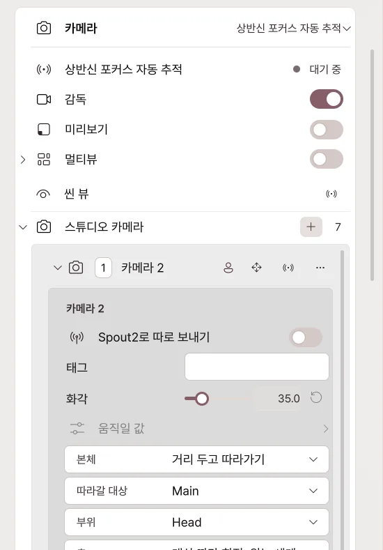
- 카메라 → 스튜디오 카메라의 +를 눌러 카메라를 만듭니다.
- 카메라 이름을 눌러 세부 설정을 펼칩니다.
- 대상·위치·시선·렌즈를 맞춥니다.
- 해당 카메라를 송출 대상으로 선택합니다.
직접 잡기를 켜면 씬 화면에 카메라가 나타나 소품처럼 옮기고 돌릴 수 있습니다. 직접 잡기와 현재 화면으로는 카메라 설정의 첫 줄과 카메라의 ⋯ 메뉴에 있습니다. 현재 작업 구도를 그대로 쓰려면 현재 화면으로를 사용합니다.
위치 방식
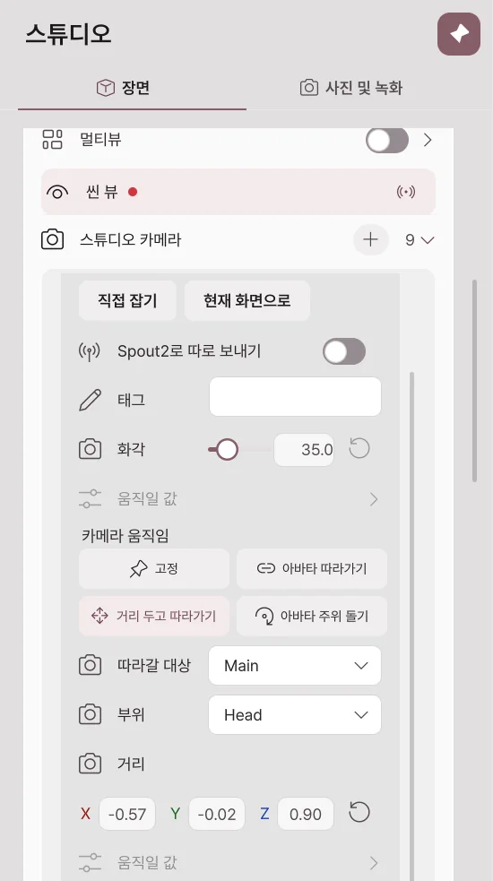
| 선택 | 카메라가 움직이는 방식 |
|---|---|
| 제자리 | 정해 둔 위치에 머뭅니다. 아바타가 이동해도 따라가지 않습니다. |
| 대상 고정 | 선택한 뼈나 지점에 붙습니다. 머리를 고르면 머리 안쪽에 들어갈 수 있습니다. |
| 거리 두고 따라가기 | 대상에서 X·Y·Z만큼 떨어진 자리를 유지하며 따라갑니다. |
| 대상 돌기 | 정한 거리에서 대상 주위를 돕니다. 링 각도로 앞·옆 구도를 바꿉니다. |
- 대상: 따라갈 아바타와 머리·몸 등의 기준 지점을 고릅니다.
- 거리 X·Y·Z: 대상에서 카메라를 좌우·높이·앞뒤로 얼마나 떨어뜨릴지 정합니다.
- 부드러움: 높이면 천천히 따라와 떨림이 줄고, 낮추면 바로 반응합니다.
회전 기준
| 선택 | 아바타가 돌아서면 |
|---|---|
| 세계 좌표 | 카메라의 상대 방향은 장면 기준으로 유지됩니다. |
| 단순 추적 | 대상의 뒤를 따라가며 이동합니다. |
| 대상 따라 회전, 위는 세계 | 좌우 회전을 따라가되 화면 위쪽은 세워 둡니다. |
| 회전, 롤 없음 | 좌우·상하 회전을 따라가고 고개 기울기는 따르지 않습니다. |
| 대상에 고정 | 고개 기울기를 포함한 전체 회전에 맞춰 카메라 자리도 돌아갑니다. |
이 설정은 카메라가 놓이는 기준입니다. 얼굴을 계속 화면에 담으려면 아래 시선 방식도 고르세요.
시선 방식
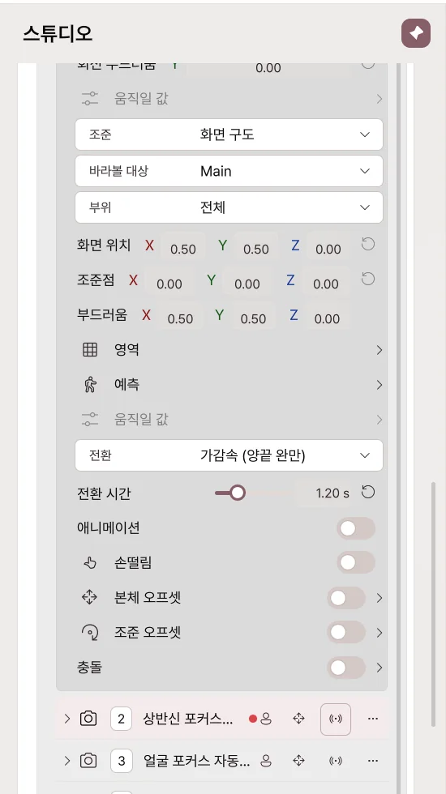
| 선택 | 렌즈가 보는 곳 |
|---|---|
| 제자리 | 지정한 방향을 계속 봅니다. |
| 대상과 함께 | 대상이 돌아보는 방향으로 함께 돌아갑니다. |
| 대상 응시 | 선택한 얼굴이나 지점을 계속 바라봅니다. |
| 1인칭 | 시작 각도를 기준으로 인물 시점처럼 봅니다. |
| 화면 구도 | 대상을 화면에서 정한 위치에 담도록 방향을 맞춥니다. |
- 조준점: 대상에서 초점을 둘 위치를 X·Y·Z로 옮깁니다.
- 화면 위치: 가로·세로 0.5는 가운데입니다. 값을 바꾸면 아바타를 화면의 다른 위치에 담습니다.
- 시선 부드러움: 높이면 렌즈 방향이 느긋하게 바뀌고, 낮추면 바로 따라갑니다.
렌즈와 전환
| 항목 | 값을 바꾸면 |
|---|---|
| 시야각 | 낮추면 망원처럼 크게, 높이면 광각처럼 넓게 담습니다. |
| 직교 크기 | 높이면 더 넓게 담아 아바타가 작아집니다. |
| 앞 클리핑 거리 | 이 거리보다 가까운 물체를 그리지 않습니다. 높이면 얼굴·소품이 잘릴 수 있습니다. |
| 뒤 클리핑 거리 | 이 거리보다 먼 물체를 그리지 않습니다. |
| 화면 비율 | 가로 방송·세로 영상 등 화면 모양을 바꿉니다. |
| 흔들림 강도 | 높이면 손으로 들고 찍는 느낌이 강해집니다. 0은 흔들리지 않습니다. |
| 흔들림 속도 | 높이면 더 빠르게 흔들립니다. |
| 컷 | 다른 카메라로 즉시 바뀝니다. |
| 크로스페이드 | 두 카메라 화면이 전환 시간 동안 겹쳐 바뀝니다. |
감독과 멀티뷰
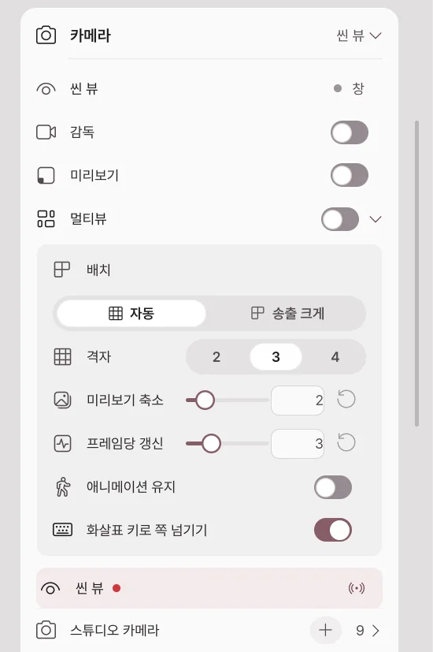
- 감독 모드: 카메라를 전환해 방송 화면을 구성합니다.
- 멀티뷰: 여러 카메라 미리보기를 한곳에서 봅니다. 별도 스위치로 켭니다.
- 격자: 늘리면 한 번에 보는 카메라가 많아지고 각 칸은 작아집니다.
- 다운샘플링: 높이면 미리보기 화질과 PC 부담이 함께 줄어듭니다.
- 갱신률: 낮추면 미리보기가 덜 매끄럽고 PC 부담이 줄어듭니다.
- 자동 전환: 태그와 가중치로 다음 카메라를 고릅니다. 가중치 0인 카메라는 자동 선택되지 않습니다.
- 카메라별 Spout2: 선택한 카메라 영상을 별도 이름으로 OBS에 보냅니다. 최대 3개를 추가 출력할 수 있습니다.
장면 저장
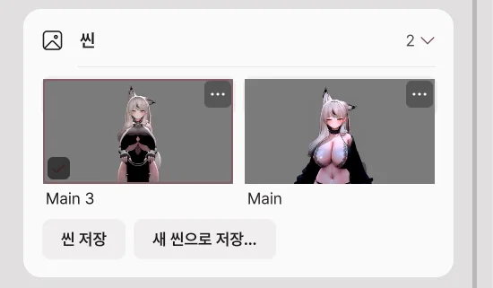
- 배경·조명·아바타·카메라를 원하는 상태로 맞춥니다.
- 씬 카드에서 저장합니다.
- 다음에 썸네일을 선택하면 그 장면 구성을 불러옵니다.
씬은 아바타의 위치와 포즈도 함께 기억해, 다시 열면 그대로 돌아옵니다. 씬 안에서 아바타를 바꾸면 바꾼 아바타가 그 씬의 아바타가 됩니다. 저장하지 않은 변경이 있는 채로 아바타 목록으로 돌아가면 저장할지 묻습니다.
| 항목 | 하는 일 |
|---|---|
| 새 씬 | 새 장면 구성을 만듭니다. |
| 저장 | 현재 배치와 설정을 기록합니다. |
| 썸네일 | 저장한 장면을 불러옵니다. |
| 검색 | 이름으로 장면을 찾습니다. |
| ⋯ 메뉴 | 이름 변경·복제 등 해당 장면의 명령을 엽니다. |
배경
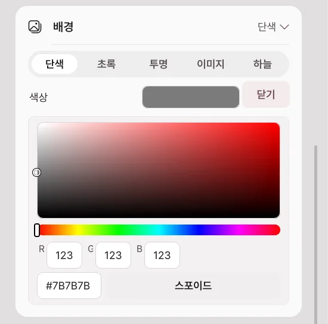
| 선택 | 보이는 결과 |
|---|---|
| 단색 | 고른 색으로 배경을 채웁니다. |
| 초록 | OBS에서 크로마키로 지울 수 있는 배경입니다. 의상과 다른 색을 고르세요. |
| 투명 | Spout2·NDI에서 배경 없이 합성합니다. 받는 쪽도 알파 합성을 지원해야 합니다. |
| 이미지 | PNG·JPG 그림을 배경으로 사용합니다. |
| 하늘 | 하늘 풍경을 배경으로 사용합니다. |
이미지의 확대·축소는 그림 크기를, 좌우·상하 위치는 그림이 놓이는 자리를 바꿉니다. 채우기를 켜면 비율을 유지하며 가장자리를 잘라 채웁니다.
휴대폰·캠코더처럼 보이는 촬영 화면 장식은 스튜디오 → 사진 및 녹화 탭으로 옮겨졌습니다. 사진 및 녹화를 보세요.
조명
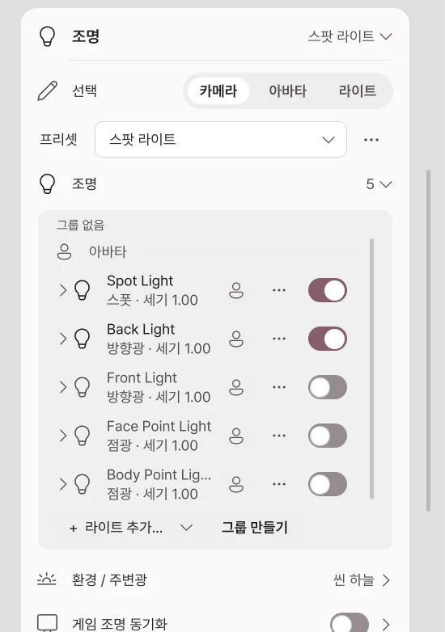
프리셋으로 전체 분위기를 고르고, 개별 라이트를 눌러 세부 조절합니다. 프리셋 목록은 종류별로 접혀 있고, 직접 저장한 프리셋이 맨 위에 놓입니다.
| 항목 | 바꾸면 |
|---|---|
| 세기 | 높이면 밝아집니다. 너무 높으면 피부·머리카락이 하얗게 날아갑니다. |
| 색상 | 아바타를 비추는 빛의 색을 바꿉니다. |
| 색온도 | 낮으면 주황빛, 높으면 푸른빛에 가까워집니다. |
| 범위 | 점광·스폿의 빛이 더 먼 곳까지 닿습니다. |
| 스폿 각도 | 좁히면 한 부분을, 넓히면 주변까지 비춥니다. |
| 그림자 강도 | 높이면 그늘이 짙어집니다. |
| 그림자 부드러움 | 높이면 그늘의 경계가 흐려집니다. |
| 환경광 | 라이트가 직접 닿지 않는 부분을 밝힙니다. |
위치와 대상
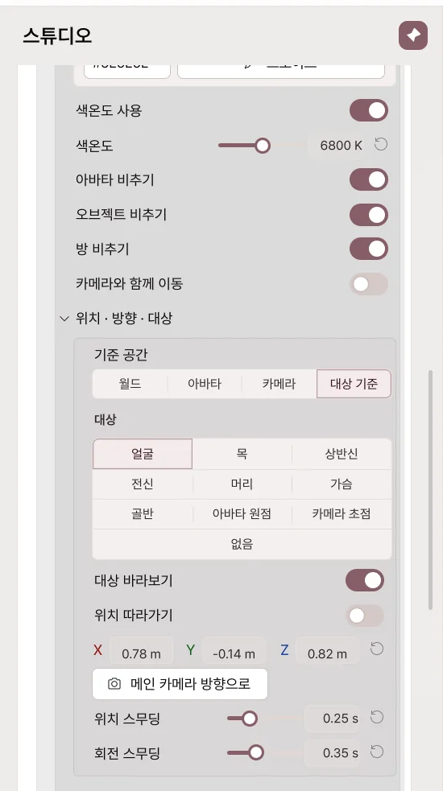
- 위치 따라가기: 아바타나 뼈가 이동할 때 라이트도 따라옵니다.
- 대상 바라보기: 라이트를 대상 쪽으로 돌립니다.
- 부드러움: 높이면 대상의 작은 떨림을 덜 따라갑니다.
- 라이트 그룹: 여러 라이트를 묶어 위치·회전·밝기를 함께 바꿉니다.
- 볼류메트릭 스폿 (Pro): 공기 중에 빛기둥을 만듭니다. 밀도를 높이면 빛줄기가 진해집니다.
효과
스튜디오 → 효과를 엽니다. 제목을 누르면 조절 항목이 펼쳐지고, 오른쪽 스위치를 켜면 효과가 적용됩니다.
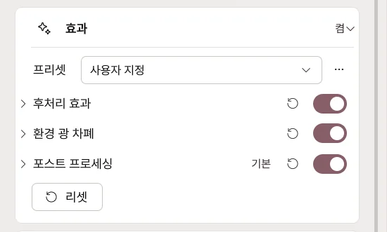
| 묶음 | 사용할 수 있는 에디션 |
|---|---|
| 포스트 프로세싱 | Basic·Pro |
| 후처리 효과 | Pro |
| 환경 광 차폐 | Pro |
같은 이름의 블룸·피사계 심도가 두 묶음에 있습니다. 처음에는 한 묶음에서 하나씩 켜고 결과를 비교하세요. 각 제목의 초기화 아이콘은 그 묶음만, 아래 리셋은 모든 효과를 되돌립니다.
포스트 프로세싱
기본적인 색감·빛 번짐·렌즈 효과를 조절합니다.
안티에일리어싱
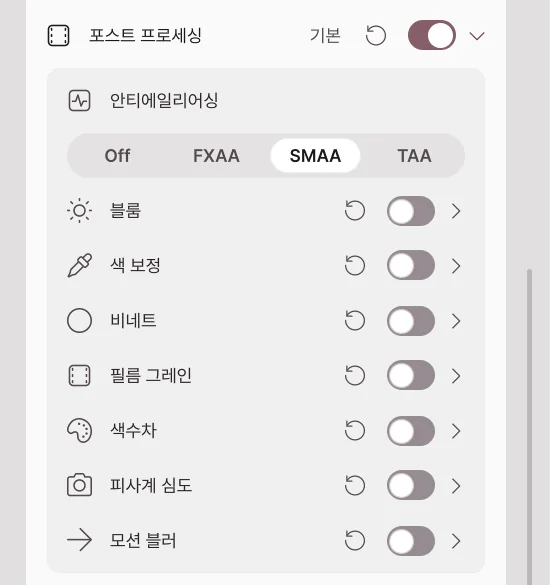
머리카락이나 의상의 계단처럼 보이는 윤곽을 부드럽게 합니다.
| 선택 | 보이는 차이 |
|---|---|
| Off | 윤곽 보정을 끕니다. |
| FXAA | 가볍게 보정합니다. 작은 무늬가 조금 흐려질 수 있습니다. |
| SMAA | 세부를 살리며 윤곽을 정리합니다. |
| TAA | 시간에 걸쳐 화면을 안정시킵니다. 움직일 때 잔상이 생길 수 있습니다. |
블룸
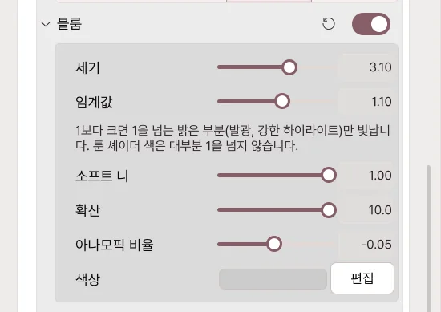
밝은 머리카락·발광 장식 주위에 빛이 번지게 합니다.
| 조절 | 높이면 |
|---|---|
| 세기 | 빛 번짐이 진해집니다. |
| 임계값 | 더 밝은 부분에만 번짐이 생깁니다. 낮추면 보통 밝기의 면도 번집니다. |
| 소프트 니 | 번짐이 시작되는 밝기 경계가 완만해집니다. |
| 확산 | 빛이 더 넓게 퍼집니다. |
| 아나모픽 비율 | 번짐을 가로 또는 세로로 늘립니다. |
| 색상 | 번지는 빛의 색을 정합니다. |
색 보정
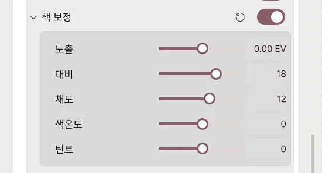
| 조절 | 값을 바꾸면 |
|---|---|
| 노출 | 높이면 화면 전체가 밝아지고, 낮추면 어두워집니다. |
| 대비 | 높이면 밝고 어두운 차이가 커집니다. |
| 채도 | 높이면 색이 진해지고, 낮추면 흑백에 가까워집니다. |
| 색온도 | 낮으면 차갑게, 높으면 따뜻하게 보정합니다. |
| 틴트 | 녹색과 자홍색 사이의 색 기운을 맞춥니다. |
비네팅
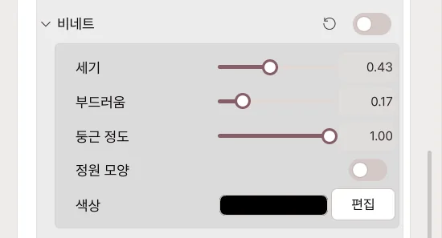
화면 가장자리를 어둡게 만들어 가운데로 시선을 모읍니다.
- 세기: 높이면 가장자리가 더 어두워집니다.
- 부드러움: 높이면 어두워지는 경계가 넓게 퍼집니다.
- 둥근 정도: 가장자리 모양을 바꿉니다.
- 색상: 가장자리에 섞을 색입니다.
필름 그레인
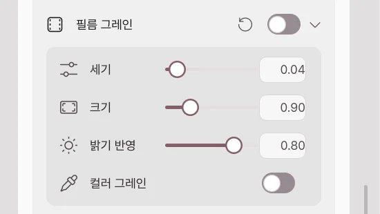
화면에 필름 같은 작은 입자를 더합니다.
- 세기: 높이면 입자가 더 잘 보입니다.
- 크기: 높이면 입자가 커집니다.
- 색상 사용: 켜면 색이 있는 입자를 사용합니다.
색수차
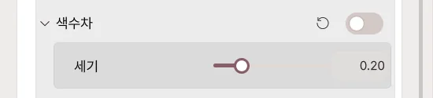
윤곽 가장자리에 빨강·초록·파랑이 어긋나는 렌즈 효과를 만듭니다. 세기를 높일수록 색이 더 벌어집니다.
피사계 심도
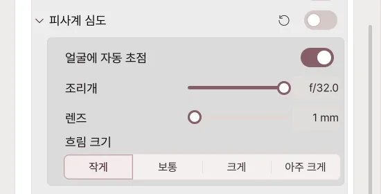
초점이 맞는 얼굴은 선명하게 두고, 앞뒤를 흐리게 합니다.
| 조절 | 바꾸면 |
|---|---|
| 얼굴 자동 초점 | 켜면 움직이는 얼굴에 초점을 맞춥니다. |
| 초점 거리 | 자동 초점을 끈 상태에서 선명하게 보일 거리를 정합니다. |
| 조리개 | f 숫자가 작을수록 앞뒤 흐림이 강해집니다. |
| 렌즈 | 긴 렌즈일수록 초점 앞뒤가 더 쉽게 흐려집니다. |
| 흐림 품질 | 높이면 흐림이 매끄러워지고 PC 부담이 늘어납니다. |
조리개를 너무 낮추거나 초점 거리가 얼굴과 맞지 않으면 얼굴도 흐려집니다.
모션 블러
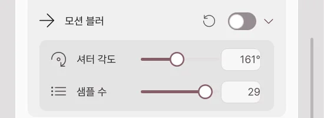
빠른 움직임에 잔상을 더합니다.
- 셔터 각도: 높이면 잔상이 더 길게 번집니다.
- 샘플 수: 높이면 잔상이 매끄러워지고 PC 부담이 늘어납니다.
후처리 효과 (Pro)
Beautify 기반의 별도 카메라 효과입니다. 화면에는 후처리 효과라는 이름으로 표시됩니다.
색·톤
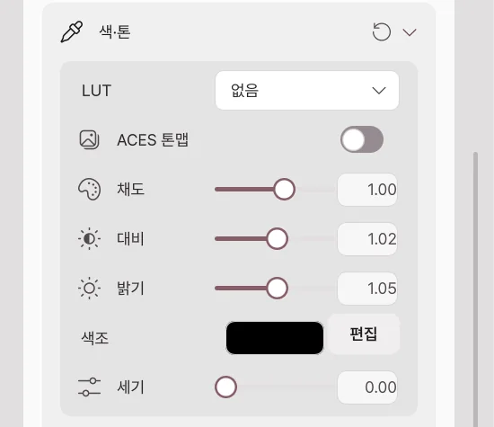
| 조절 | 바뀌는 것 |
|---|---|
| LUT | 정해진 색감 필터를 고릅니다. |
| LUT 세기 | 높이면 필터의 색감이 강해집니다. |
| ACES 톤맵 | 밝은 곳과 어두운 곳의 표현을 바꿉니다. |
| 채도 | 높이면 색이 진해집니다. |
| 대비 | 밝고 어두운 차이를 바꿉니다. |
| 밝기 | 전체 화면의 밝기를 바꿉니다. |
| 색조·세기 | 선택한 색을 화면에 섞습니다. 세기 0이면 색을 골라도 보이지 않습니다. |
선명하게·디더
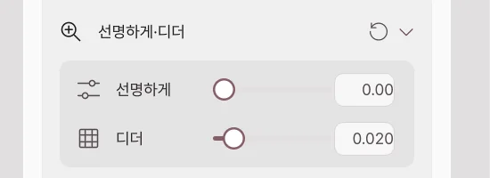
- 선명하게: 윤곽을 또렷하게 합니다. 0이면 꺼집니다. 너무 높으면 가장자리가 거칠어집니다.
- 디더: 배경 그라데이션의 색 띠를 작은 노이즈로 덜 보이게 합니다.
블룸
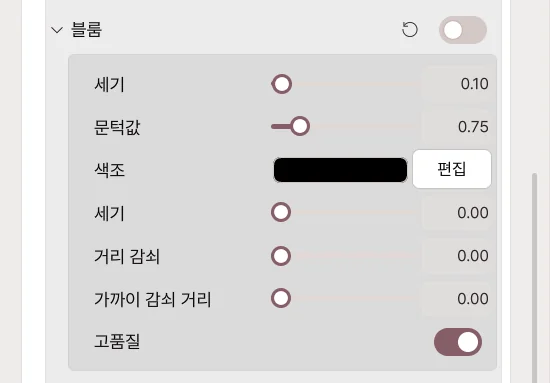
- 세기: 빛 번짐의 진하기입니다.
- 문턱값: 높일수록 더 밝은 부분에만 번짐을 만듭니다.
- 색조·세기: 번지는 빛에 섞을 색과 양입니다.
- 거리 감쇠: 먼 곳의 블룸을 줄입니다.
- 가까이 감쇠 거리: 카메라에 가까운 곳의 블룸을 줄일 범위입니다.
- 고품질: 번짐 품질을 높이며 PC 부담이 늘어납니다.
아나모픽 플레어
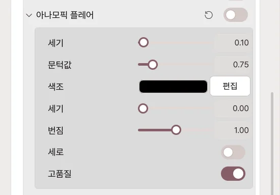
밝은 부분에서 길게 뻗는 빛줄기를 만듭니다.
- 세기: 빛줄기가 진해집니다.
- 문턱값: 높일수록 더 밝은 부분만 빛줄기를 만듭니다.
- 번짐: 빛줄기가 더 길게 퍼집니다.
- 세로: 켜면 세로 방향, 끄면 가로 방향으로 퍼집니다.
- 색조·세기: 빛줄기의 색을 정합니다.
피사계 심도
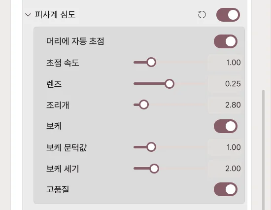
- 머리에 자동 초점: 머리를 따라 초점을 맞춥니다.
- 초점 맞출 거리: 자동 초점을 끄고 선명하게 보일 거리를 직접 정합니다.
- 초점 속도: 높이면 움직이는 대상에 더 빨리 초점을 맞춥니다.
- 렌즈·조리개: 흐려지는 범위를 조절합니다.
- 보케: 흐려진 밝은 점을 빛망울처럼 만듭니다.
- 보케 문턱값: 높일수록 더 밝은 점만 빛망울이 됩니다.
- 보케 세기: 빛망울의 밝기를 바꿉니다.
아래 블러를 켜면 이 피사계 심도는 꺼집니다.
색수차
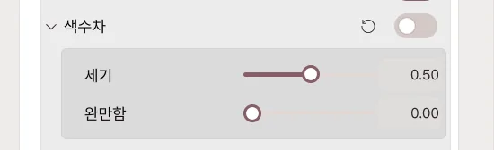
- 세기: 윤곽의 색 어긋남이 커집니다.
- 완만함: 색이 벌어지는 변화가 부드러워집니다.
투명 배경에서는 이 효과가 꺼집니다.
렌즈 먼지
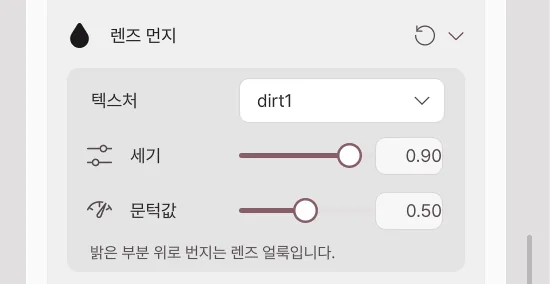
밝은 곳에 렌즈 얼룩이 겹치는 연출입니다.
- 텍스처: 사용할 얼룩 무늬를 고릅니다. 없음이면 사용하지 않습니다.
- 세기: 얼룩이 더 진하게 보입니다.
- 문턱값: 얼룩이 반응할 밝기 기준입니다.
비네트
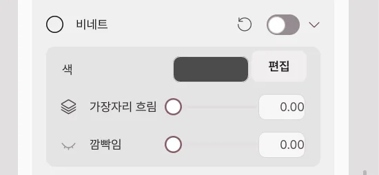
- 색: 화면 가장자리에 사용할 색입니다.
- 가장자리 흐림: 가장자리의 어두운 부분을 조절합니다.
- 깜빡임: 눈을 감듯 화면을 가리는 정도를 바꿉니다.
야간 시야
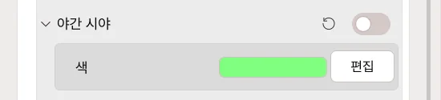
선택한 색으로 야간 카메라 같은 화면을 만듭니다. 스위치로 켜고 색상에서 연출 색을 바꿉니다.
블러
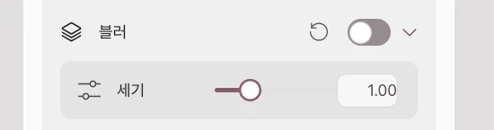
화면 전체를 흐리게 합니다. 세기를 높일수록 더 흐려집니다. 얼굴만 선명하게 남기려면 블러 대신 피사계 심도를 사용하세요.
픽셀화
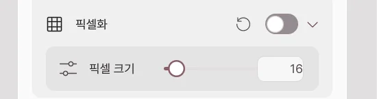
화면을 큰 네모 픽셀로 만듭니다. 픽셀 크기를 높일수록 모자이크가 굵어집니다.
환경 광 차폐 (Pro)
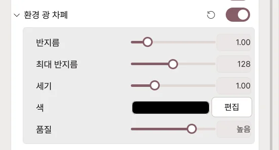
HBAO 기반으로 턱 아래·옷 주름·방 구석처럼 표면이 가까운 부분에 그늘을 더합니다.
| 조절 | 높이면 |
|---|---|
| 반지름 | 그늘이 퍼지는 범위가 넓어집니다. |
| 최대 반지름 | 화면에 그늘을 계산하는 최대 범위가 커집니다. |
| 세기 | 그늘이 짙어집니다. |
| 색 | 그늘의 색을 바꿉니다. |
| 품질 | 그늘이 매끄러워지고 PC 부담이 늘어납니다. |
눈·코 주변이 너무 검어지면 세기나 반지름을 낮추세요.
적용 전후 비교
아래 사진은 같은 아바타와 구도에서 실제 효과 값을 바꿔 촬영한 예입니다.
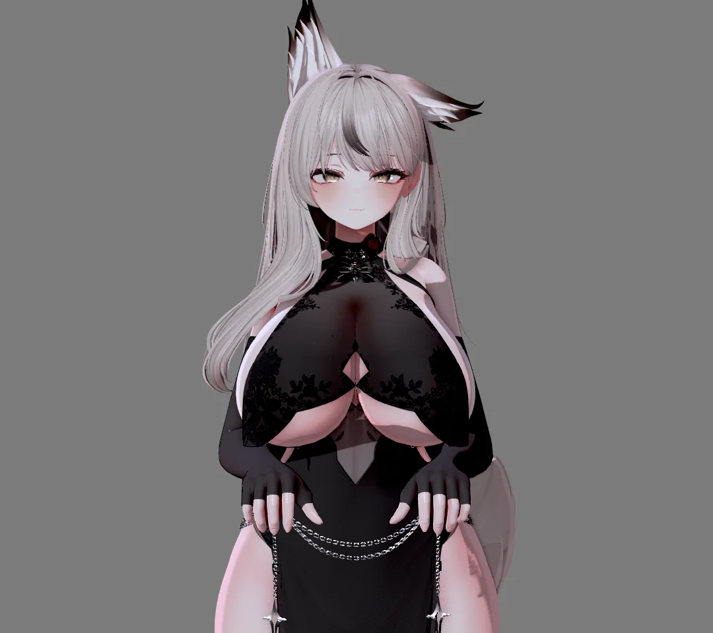
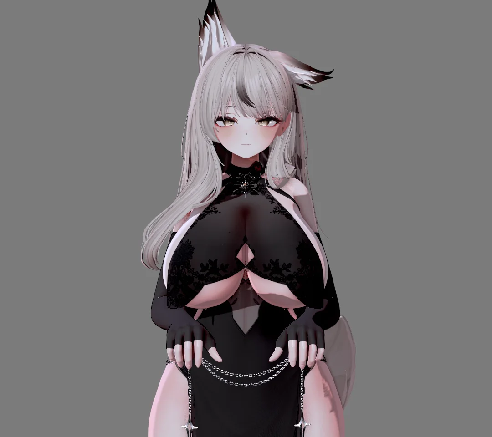
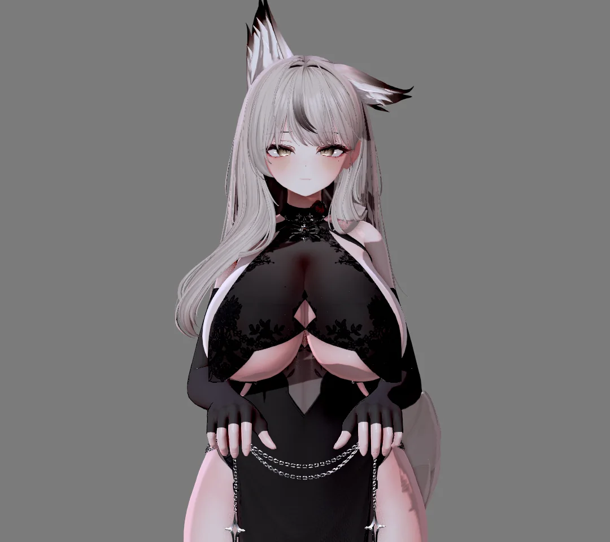
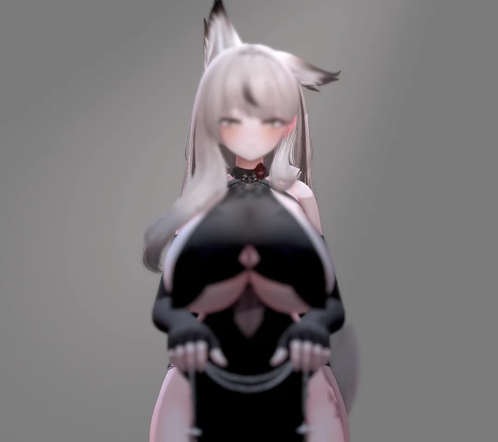
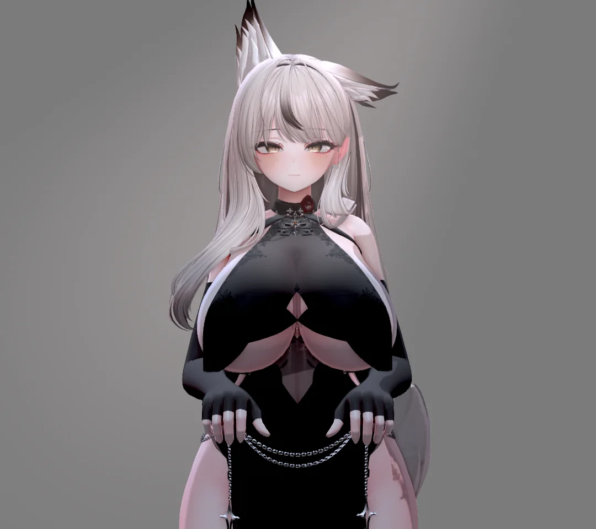
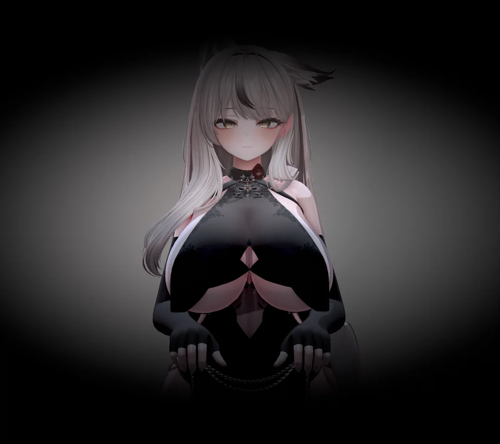
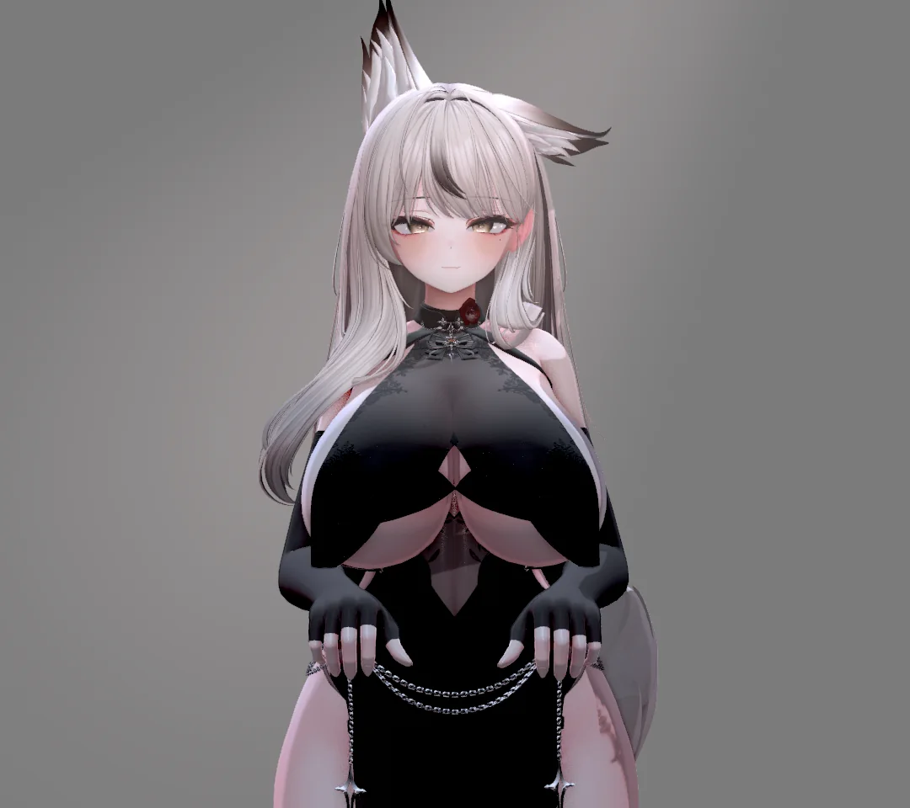
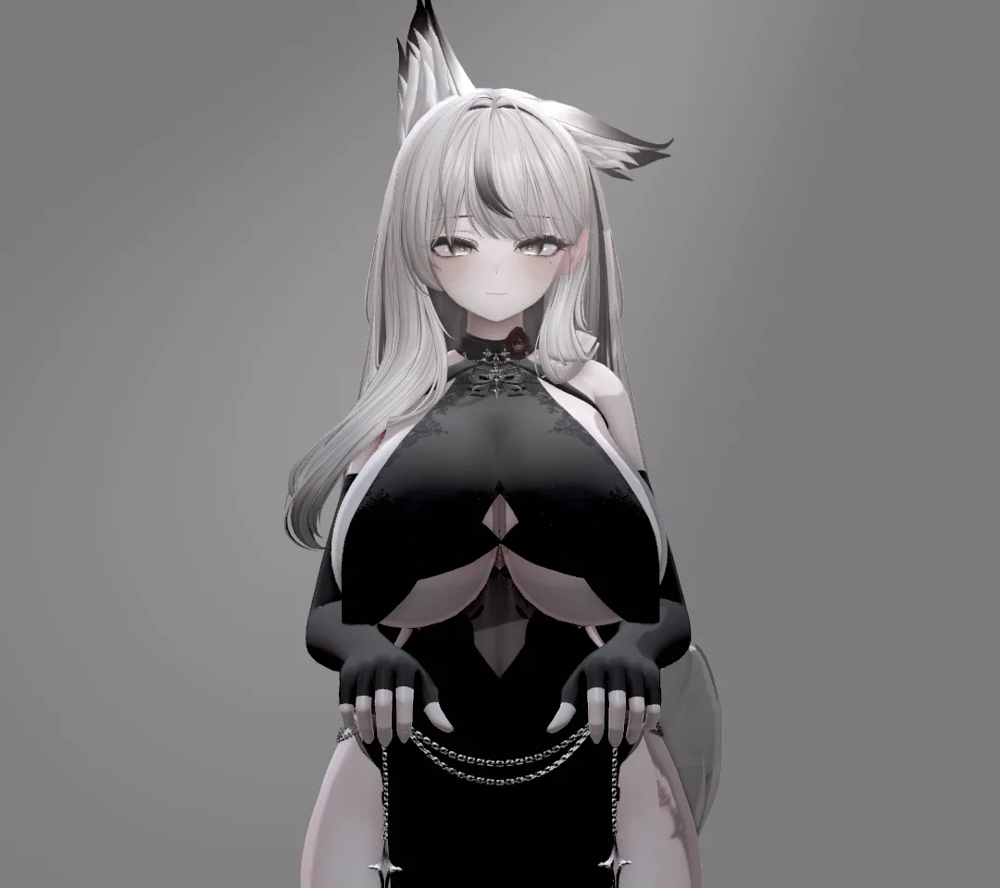
내 표정
아바타 메뉴의 내 표정 카드가 여기에도 있습니다. 만드는 방법은 내 표정을 보세요.
사진 및 녹화
스튜디오 → 사진 및 녹화 탭에 촬영 화면·사진·녹화가 차례로 모여 있습니다.
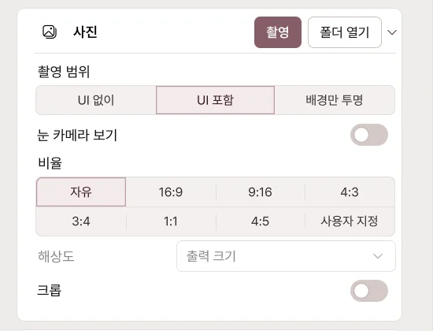
- 촬영 화면: 휴대폰·캠코더처럼 보이는 화면 장식과 비율·모양을 고릅니다.
- 사진: 현재 출력 화면을 PNG로 저장합니다.
- 크롭: 사진에 담을 영역을 자릅니다.
- 비율: 가로·세로·정사각형 등 사진 모양을 고릅니다.
- 해상도: 저장 파일의 픽셀 수를 정합니다.
- 녹화 (Pro): 영상을 MP4로 저장합니다. 시작 후 정지를 눌러 파일을 마무리합니다.
- 마이크 소리: 켜면 내 마이크와, 화면 공유 중이면 공유한 게임 소리가 한 트랙으로 섞여 들어갑니다. 끄면 게임 소리만 들어가고, 공유가 없으면 소리 없이 녹화됩니다.